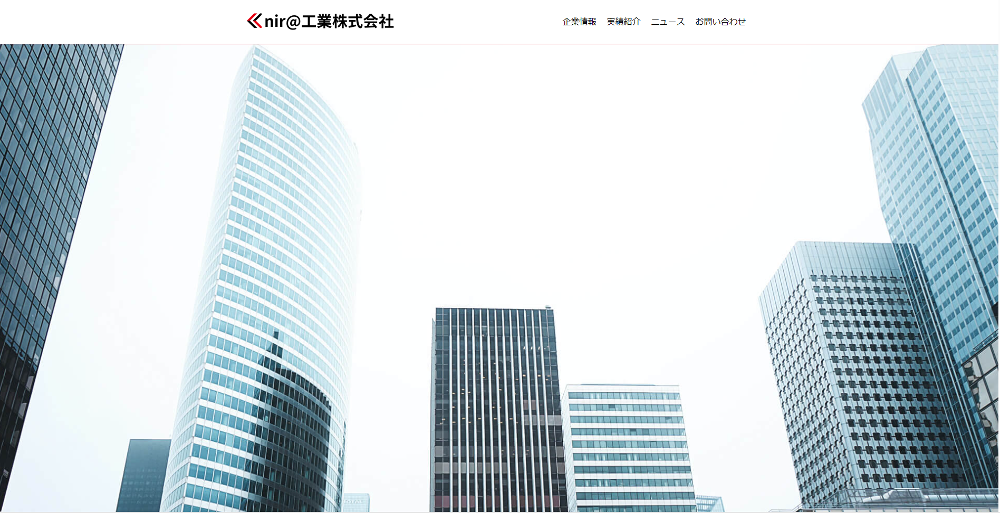

制作実績一覧
新規サイトのトップページ制作(仮想案件)
制作期間: 1か月弱（2023年5月17日から6月20日）
使用言語: HTML/CSS
プロジェクトの経験と学び
これまでHTML、CSS、JavaScriptの基本を学習してきましたが、それを実際のサイト制作に適用する経験は新鮮であり、いくつかの挑戦を伴いました。
特に、HTMLの属性を整理することや、CSSの適用範囲を制御することには悩みました。
今後の課題
私では、基礎的な知識だけでは解決できないものでした。
そこで、学んだことをより現実的な開発環境に適用するための、新たな手法やアプローチについて探求することに決めました。
取り組みの目標
知識を蓄えるだけではなく、それを具体的な状況で適用することです。
知識を実践的に活用し、学んだことを自分自身のスキルとしてアウトプットすることの重要性を理解しました。

※別タグで開きます
スタッフ紹介ページの制作（仮想案件）
制作期間: 2週間（2023年6月16日から7月1日）
使用言語: HTML/CSS
プロジェクトの経験と学び
このプロジェクトを通じて、ページ構成やレイアウト、そして全体的なサイトデザインの重要性が深く理解できました。
しかしながら、それぞれの目的に最も適したデザインを作り出すためには、より具体的な調整が求められることを発見しました。
今後の課題
私の次なる目標は、デザインの質をさらに向上させることです。
新たな技術や手法を学び、それを駆使してデザインを進化させていきたいと思います。
また、ユーザーのニーズに対する対応力を強化するために、柔軟な思考とスキルを養いたいと考えています。
取り組みの目標
ここれらの挑戦は、私のスキルと知識を拡張し、より高品質なサイト制作を可能にするための重要性を理解しました。

※別タグで開きます
コーポレートサイトの新規製作（仮想案件）
制作期間: 3日（2023年8月22日から8月25日）
使用言語: HTML/CSS(scss)/JavaScript
プロジェクトの経験と学び
このプロジェクトでは、高速な開発が求められ、1週間という短期間での成果物提供を目指しました。
この「タイムアタック」スタイルのプロジェクト管理は、クライアントの急な発注に柔軟に対応する能力を磨く良い機会となりました。
今後の課題
コード品質の向上: BEM記法を導入することで、コードの可読性とメンテナンス性を高めたい思います。
知識と技術の拡充: 新しいプログラミング言語やフレームワークを学ぶなど、スキルセットを広げていきます。
ユーザー対応力の強化: クライアントやエンドユーザーのニーズを迅速に把握し、それに対する解決策を柔軟に提供できるようになりたいと考えています。
取り組みの目標
レスポンシブデザインにおける単位（rem/em/px/%）についての理解を深め、それぞれの単位がもたらす影響と最適な使用シーンを明確にします。
今後もこのような経験を通じて、常に成長し続けるプロフェッショナルを目指して参ります。。
※別タグで開きます
既存サイトのリニューアル（実案件/制作中）
制作期間: 1か月～（2023年7月28日から）
使用言語: HTML/SASS(SCSS)/JS
プロジェクトの経験と学び
To be continued.
To be continued.
今後の課題
To be continued.
To be continued.
To be continued.
取り組みの目標
To be continued.

※別タグで開きます